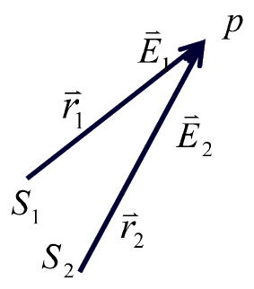
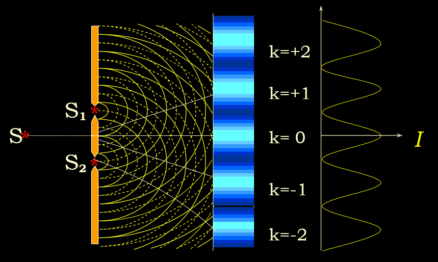
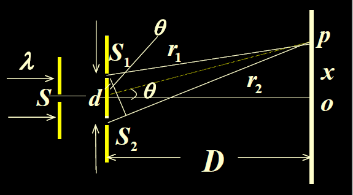
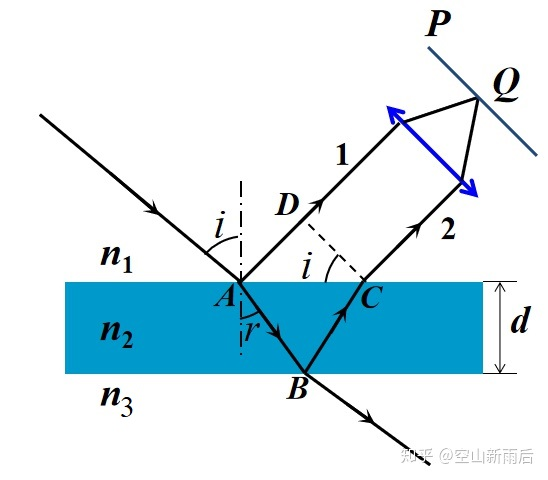
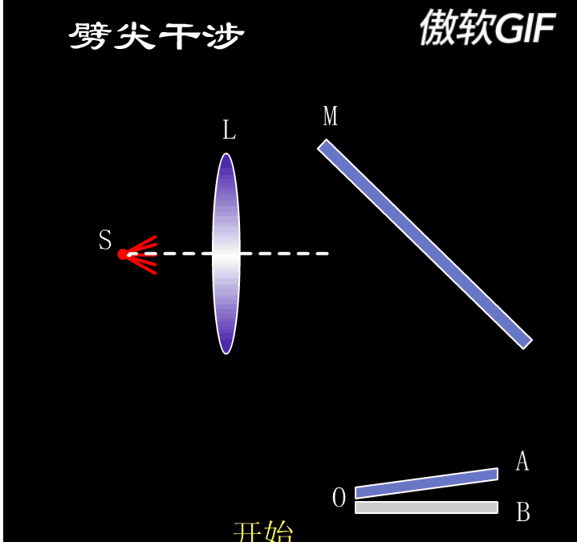
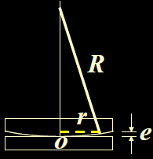
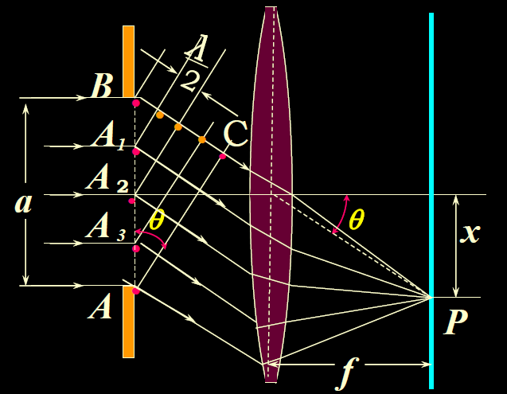
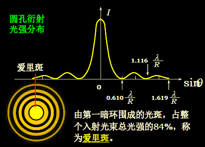
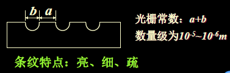

0 一些简单总结
| 实验 | 波程差 $\delta$ | 字母释义 | 半波损失 |
|---|---|---|---|
| 杨氏双缝干涉实验 | $d \cdot \dfrac{x}{D}$ | $d$: 两光源距离 $D$: 狭缝平面与屏幕距离 | |
| 等倾干涉 | $2 e \sqrt{n_{2}^{2}-n_{1}^{2} \cdot \sin ^{2} i} +\dfrac{\lambda}{2}$ | $e$: 厚度 $n_2$: 薄膜折射率 $n_1$: 介质折射率 | (条件) |
| 增透/反膜的 反射光波程差 | $2 n_{2} d$ | $n_2$: 薄膜折射率 | (条件) |
| 劈尖干涉 | $2 n e+\dfrac{\lambda}{2}$ | (近似垂直入射) $n$: 夹层介质折射率 | (条件) |
| 牛顿环* | $2 e+\frac{\lambda}{2}$ | $e$: 空气薄层厚度 | |
| 单缝夫琅和费衍射 | $a \sin \theta$ | $a$: 缝宽 $\theta$: 衍射角 | |
| 光栅方程 | $d\sin \theta=(a+b) \sin \theta$ | $d=a+b$: 光栅常量 $\theta$: 衍射角 |
1 光波及其相干条件
光波的描述方法 (P284)
- 在波动光学中，主要讨论的是相对光强，因此在同一介质中直接把光强定义为：$\bar{I}=E_{0}^{2}$
光的叠加性 相干条件 (P285)
非相干叠加：独立光源的两束光或同一光源的不同部位所发出的光的位相差“瞬息万变”。
条件：
（1）频率相同
（2）振动方向相同
（3）具有固定的位相差

$E_{1}\left(\vec{r}_{1}, t\right)=E_{10} \cos \left(\omega t-k r_{1}+\varphi_{1}\right)$
$E_{2}\left(\vec{r}_{2}, t\right)=E_{20} \cos \left(\omega t-k r_{2}+\varphi_{2}\right)$
$E=\sqrt{E_{10}^{2}+E_{20}^{2}+2 E_{10} E_{20} \cos \Delta \varphi}$
$\Delta \varphi=\varphi_{2}-\varphi_{1}-\dfrac{2 \pi}{\lambda}\left(r_{2}-r_{1}\right)$
$2 \sqrt{I_{1} I_{2}} \cos \Delta \varphi \rightarrow$ 干涉项
$I=I_{1}+I_{2}+2 \sqrt{I_{1} I_{2}} \cos \Delta \varphi$
相长干涉：$\Delta \varphi=\pm 2 k \pi \quad I=4 I_{1} \quad$
相消干涉：$\Delta \varphi=\pm(2 k+1) \pi \quad I=0$
获得相干光波一般方法
1 分波前的方法 杨氏干涉
2 分振幅的方法 等倾干涉、等厚干涉
光程和光程差
在介质中传播的波长，折算成真空中波长的关系：$\lambda_{n}=\frac{\lambda}{n}$
光程这个概念可将光在介质中走过的路程，折射为光在真空中的路程
均匀介质中，光程$L=n r=\dfrac{c}{u} r=c t$
光程差$\delta=\left(n_{2} r_{2}-n_{1} r_{1}\right)$
$\Delta \varphi=\Delta \varphi_{0}-\frac{2 \pi}{\lambda} \delta$
两相干光源同位相， $\Delta \varphi=-\frac{2 \pi}{\lambda} \delta$
两相干光源同位相，干涉条件
$\begin{array}{lll}\delta=\pm k \lambda & k=0,1,2 \cdots & \text { 加强 (明) } \\ \delta=\pm(2 k+1) \frac{\lambda}{2} & k=0,1,2 \cdots & \text { 减弱 (暗) }\end{array}$
使用透镜不会引起各相干光之间的附加光程差。
2 分波阵面干涉
一、杨氏双缝干涉实验


$\begin{aligned} \delta &=r_{2}-r_{1} \approx d \sin \theta \approx d \operatorname{tg} \theta=d \cdot \frac{x}{D} \end{aligned}$
干涉加强，明纹位置：
$\delta=\pm k \lambda$
$x_{\pm k}=\pm k \frac{D}{d} \lambda, k=0,1,2 \cdots$
干涉减弱，暗纹位置：
$\delta=\pm(2 k+1) \frac{\lambda}{2}$
$x_{\pm(2 k+1)}=\pm(2 k+1) \frac{D}{2 d} \lambda$
- 两相邻明（或暗）条纹间的距离称为条纹间距。
条纹间距$\Delta x=x_{k+1}-x_{k}=\frac{D}{d} \lambda$ (与$k$无关) - 复色光：内→外：紫→红
二、分波前干涉的其它一些实验(P289)
菲涅耳双面镜实验
明条纹中心：$x=k \lambda \frac{D}{d}$
暗条纹中心：$x=\frac{2 k+1}{2} \lambda \frac{D}{d}$
（$k=0, \pm 1, \pm 2 \cdots$）
劳埃德镜实验

当屏幕 E 移至E’处，从 S1和 S2 到 L点的光程差为零，但是观察到暗条纹，验证了反射时有半波损失存在。
3 分振幅干涉
等倾干涉

$\delta=n_{2}(A B+B C)-n_{1} AD +\dfrac{\lambda}{2}$(半波损失)
$\delta=2 e \sqrt{n_{2}^{2}-n_{1}^{2} \cdot \sin ^{2} i}+\dfrac{\lambda}{2}$(半波损失)
$\delta=\left\{\begin{array}{cll}k \lambda & k=1,2, \cdots & \text { 加强,明纹 } \\ (2 k+1) \lambda / 2 & k=0,1,2, \cdots & \text { 减弱,暗纹 }\end{array}\right.$
有半波损失（外程差）： $n_{1} < n_{2} > n_{3}$ 或 $n_{1} > n_{2} < n_{3}$
无半波损失（外程差）： $n_{1} > n_{2} > n_{3}$ 或 $n_{1} < n_{2} < n_{3}$

- $e$一定，同一级条纹具有相同的倾角，称这种干涉为等倾干涉
- $i$一定，则对应不同的厚度有不同的干涉，这种干涉叫等厚干涉。
- 入射角$i$越小，光程差越大，条纹越在中心，干涉级越大。
- 当膜厚减小时：盯住某条明纹，$\delta$不变，$e$减小，$i$减小，条纹向里收缩，中心处明暗交替。
增透膜和增反膜
增透膜，反射光相干相消的条件是：$2 n_{2} d=(2 k+1) \lambda / 2$
等厚干涉
劈尖干涉


$\delta=2 n_{2} e+\frac{\lambda}{2}(半波损失)=\left\{\begin{array}{lll}k \lambda & k=1,2,3 \cdots & \text { 明条纹 } \\ (2 k+1) \lambda / 2 & k=0,1,2 \cdots & \text { 暗条纹 }\end{array}\right.$
劈棱处为明纹还暗纹, 应视 $n 、 n_{1} 、 n_{2}$ 的值而定，若$n_{1} < n < n_{2}$ 或 $n_{1} > n > n_{2}$ , 膜上、下表面的两反射光或均有半波损失，两半波损失相抵或均无半波损失, 劈棱处 $e=0$, 光程差 $\delta = 0$, 为明条纹, 否则 $e = 0$ 处 $\delta = \lambda / 2$, 为暗条纹。
$\left\{\begin{array}{l}l \sin \theta=e_{k+1}-e_{k} \\ e_{k+1}-e_{k}=\frac{\lambda}{2 n_{2}}\end{array}\right.$$\Rightarrow l=\dfrac{\lambda}{2 n_{2} \sin \theta}$
- 薄膜厚度增加时，条纹下移；薄膜的$\theta$增加时，条纹下移
牛顿环

$\delta=2 e+\frac{\lambda}{2}=\left\{\begin{array}{ccc}k \lambda & k=1,2,3 \cdots & \text { 明条纹 } \\ (2 k+1) \lambda / 2 & k=0,1,2 \cdots & \text { 暗条纹 }\end{array}\right.$
$\left\{\begin{array}{l}r^{2}=R^{2}-(R-e)^{2}=2 R e-e^{2} \\ R>>e\end{array}\right.$ $\quad\Rightarrow e=\dfrac{r^{2}}{2 R}$
$\left\{\begin{array}{lll}r_{K}=\sqrt{\dfrac{(2 k-1) R \lambda}{2}} & k=1,2,3 \cdots & \text { 明条纹 } \\ r^{\prime}=\sqrt{k R \lambda} & k=0,1,2 \cdots & \text { 暗条纹 }\end{array}\right.$
条纹内疏外密：$r_{k+1}-r_{k}=(\sqrt{(k+1)}-\sqrt{k}) \sqrt{R \lambda}=\frac{\sqrt{R \lambda}}{\sqrt{(k+1)}+\sqrt{k}}$
4 光的衍射
单缝夫琅和费衍射

$\delta=a \sin \theta= \begin{cases}0 & \text {中央明纹} \\ \pm(2 k+1) \frac{\lambda}{2} & k=1,2,3 \ldots \text {明纹} \\ \pm 2 k \frac{\lambda}{2}=k \lambda & k=1,2,3 \ldots \text {暗纹} \\ \text {非以上值: } & \text {介于明纹与暗纹之间}\end{cases}$
- 中央亮纹半角宽度$\Delta \theta_0=\dfrac{\lambda}{a}$
- 中央亮纹线宽度$\Delta x_{0}=2 f \tan \theta_{1}=\dfrac{2 f \lambda}{a}$
- 其它各级明条纹的宽度为中央明条纹宽度的一半。
- 缝越窄（$a$越小）,$\theta$就越大, 条纹变宽，衍射现象越明显；反之，条纹向中央靠拢。
- 条纹宽度随波长的减小而变窄。
- 光源上下移动，条纹反向移动。
- 单缝上下移动，$\theta$不变，条纹位置不变。
圆孔夫琅和费衍射

$\because \operatorname{tg} \theta \approx \theta \approx \sin \theta=0.61 \dfrac{\lambda}{r}=1.22 \dfrac{\lambda}{d}$
$\therefore$ 艾里斑线半径$ R=1.22 \dfrac{\lambda}{d} f$
光学仪器的分辨本领

最小分辨角: $\theta_{k}=\sin \theta=1.22 \dfrac{\lambda}{d}$
分辨率: $\dfrac{1}{\theta_{R}}=\dfrac{d}{1.22 \lambda}$
$d$ - 光学仪器的透光孔径
5 光栅衍射

衍射光栅
光栅方程
多缝干涉明条纹也称为主极大。
明条纹：

当单色平行光倾斜地射到光栅上时，相邻两缝的入射光在入射到光栅前已有光程差 $(a+b) \sin \theta_{0}$
缺级
$\begin{cases}a \cdot \sin \theta=\pm k^{\prime} \lambda & k^{\prime}=1,2, \cdots \\ (a+b) \cdot \sin \theta=\pm k \lambda & k=1,2, \cdots\end{cases}$
$\Rightarrow k=\dfrac{a+b}{a} \cdot k^{\prime} $就是所缺的级次$\quad k^{\prime}=1,2, \cdots$
光栅光谱(P310)
如果有几种单色光同时投射在光栅上，在屏上将出现光栅光谱。
6 X射线晶体在晶体中的衍射

干涉加强条件（布喇格公式）: